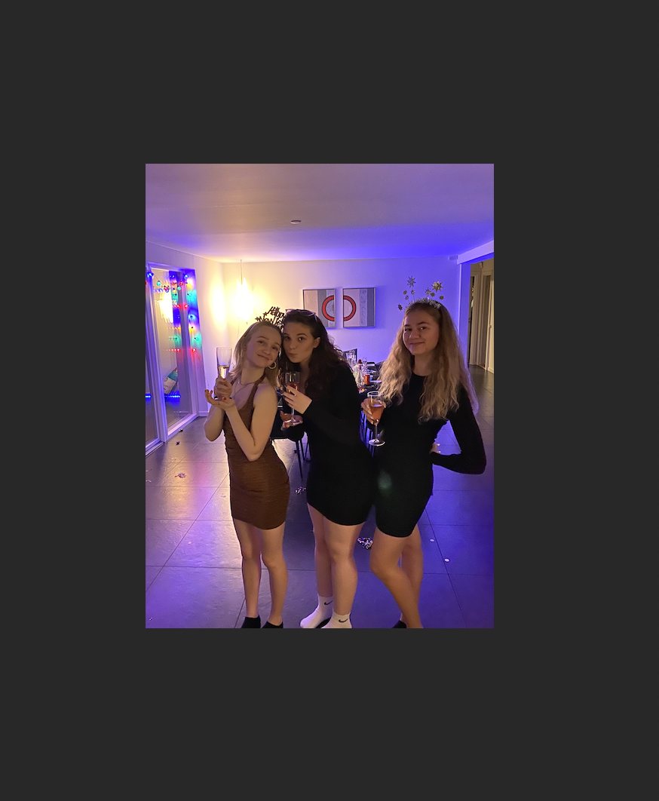

Om mig
Hej, jeg hedder Anna Mundt og er 17 år,
er svømmetræner og træner sådan en gang i mellem
og det er sku det, ej er faktisk ogs blevet livredder
og klager ikke hvis der er fest eller en god kage.
Et fact om mig er at jeg elsker børnesko
og hvis du ikke gætter det så er min yndlingsfarve blå